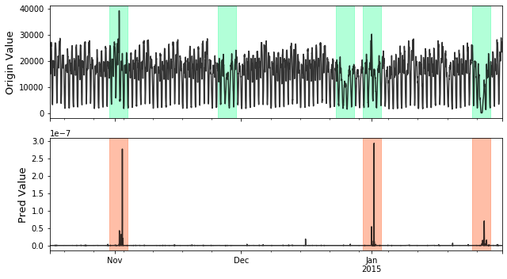

Anomaly Detection¶
Problem Description¶
Time Series Anomaly Detection’s task is to find out the possible anomalies lies in time series, like this:

To formalize, give a time series with either single channel or multi channels:
We aim to find the possible anomalies lies in X:
Models¶
Abbr |
Algorithm |
type |
supervise |
Year |
Class |
Ref |
IForest |
Isolation forest. |
outlier ensembles |
unsupervised |
2008 |
||
LSTM_dynamic |
LSTM based nonparametricanomaly thresholding. |
neural networks |
unsupervised |
2018 |
|
|
Lumino |
A light weight library luminol. |
distance based |
unsupervised |
2017 |
|
|
RCForest |
Robust random cut forest. |
outlier ensembles |
unsupervised |
2016 |
|
|
LSTMED |
RNN based time-series prediction. |
neural networks |
unsupervised |
2016 |
||
SR_CNN |
Spectral Residual and ConvNet based anomaly detection. |
neural networks |
supervised |
2019 |
||
STL |
Seasonal and Trend decomposition using Loess. |
weighted regression |
unsupervised |
1990 |
||
VAE |
Variational Auto-Encoder anomaly detection. |
probabilistic |
unsupervised |
2018 |
References
- IForest
Liu F T, Ting K M, Zhou Z H. Isolation forest[C]//2008 Eighth IEEE International Conference on Data Mining. IEEE, 2008: 413-422.
- LSTM_dynamic
Hundman K, Constantinou V, Laporte C, et al. Detecting spacecraft anomalies using lstms and nonparametric dynamic thresholding[C]//Proceedings of the 24th ACM SIGKDD International Conference on Knowledge Discovery & Data Mining. 2018: 387-395.
- Lumino
Luminol. Github, https://github.com/linkedin/luminol
- RCForest
Guha, N. Mishra, G. Roy, & O. Schrijvers, Robust random cut forest based anomaly detection on streams, in Proceedings of the 33rd International conference on machine learning, New York, NY, 2016 (pp. 2712-2721).
- LSTMED
Malhotra P, Ramakrishnan A, Anand G, et al. LSTM-based encoder-decoder for multi-sensor anomaly detection[J]. arXiv preprint arXiv:1607.00148, 2016.
- SR_CNN
Ren H, Xu B, Wang Y, et al. Time-Series Anomaly Detection Service at Microsoft[C]//Proceedings of the 25th ACM SIGKDD International Conference on Knowledge Discovery & Data Mining. 2019: 3009-3017.
- STL
Cleveland R B. STL: A seasonal-trend decomposition procedure based on loess. 1990[J]. DOI: citeulike-article-id, 1435502.
- VAE
Xu H, Chen W, Zhao N, et al. Unsupervised anomaly detection via variational auto-encoder for seasonal kpis in web applications[C]//Proceedings of the 2018 World Wide Web Conference. 2018: 187-196.
- Robust
Su Y, Zhao Y, Niu C, et al. Robust Anomaly Detection for Multivariate Time Series through Stochastic Recurrent Neural Network[C]//Proceedings of the 25th ACM SIGKDD International Conference on Knowledge Discovery & Data Mining. 2019: 2828-2837.
- NAB
Ahmad S, Lavin A, Purdy S, et al. Unsupervised real-time anomaly detection for streaming data[J]. Neurocomputing, 2017, 262: 134-147.
- NAB2
Lavin A, Ahmad S. Evaluating Real-Time Anomaly Detection Algorithms–The Numenta Anomaly Benchmark[C]//2015 IEEE 14th International Conference on Machine Learning and Applications (ICMLA). IEEE, 2015: 38-44.